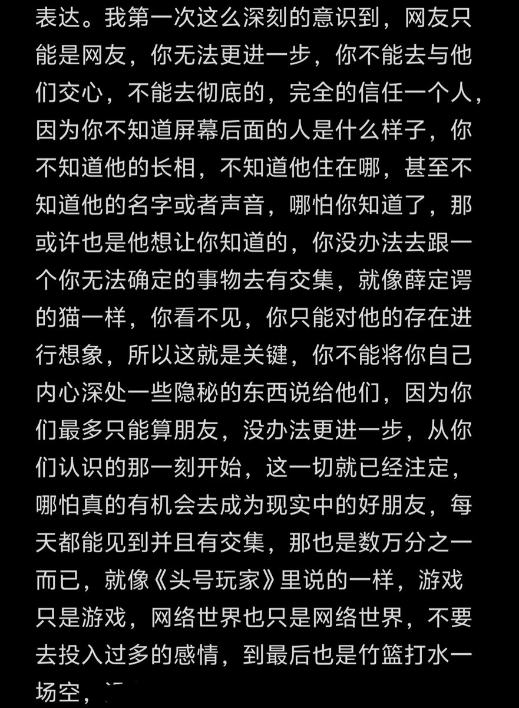

现实交友大部分都是从学校工作或者父母朋友的孩子再或者从某些场所，同时你也会听到这个人的一些传闻或者目睹他干的一些事，这个时候你才会去判断是否要跟他掏心掏肺，网络不一样，或许你们聊的很投缘，你就会说出几句真心话，但是你看不见他曾经做过什么或者正在做什么，这就是最大的难点


去年11月写的日记，这段时间经历了一些事又想起来了这篇日记
并不是完全否认交网友，但是这段情谊最好只存在于网络，我原来也有认识很长时间的网友，从20年到25年，但是到最后还是不欢而散了，网络将我们拉近同时也将我们的心隔阂，你会说一些真心话表达一些情感，但问题是对方并不能完全接收到 https://t.co/57gIOuacfp
并不是完全否认交网友，但是这段情谊最好只存在于网络，我原来也有认识很长时间的网友，从20年到25年，但是到最后还是不欢而散了，网络将我们拉近同时也将我们的心隔阂，你会说一些真心话表达一些情感，但问题是对方并不能完全接收到 https://t.co/57gIOuacfp